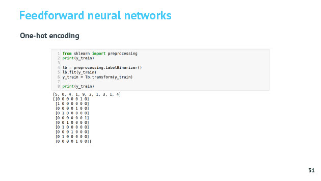
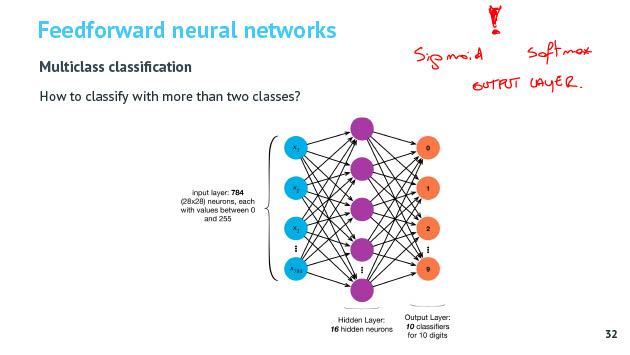
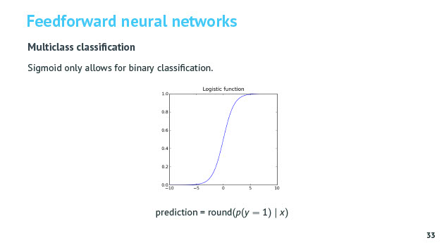
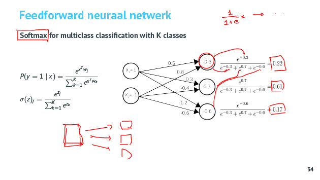
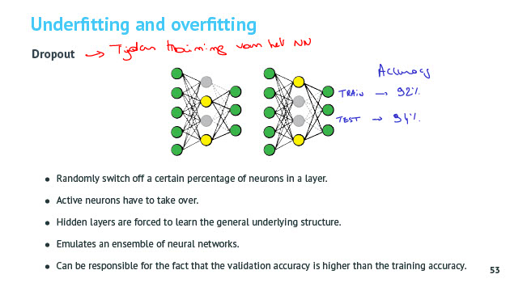
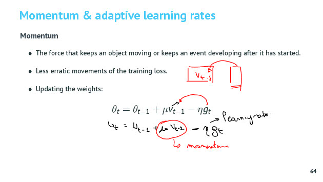

Neurale Netwerken
Tags: AI andere
Date: 2021-02-28
Type: Cursus topic
Related:
Source :
Notities
Biologisch neuron
Artificeel NN is geinsipireerd op onze hersenen.
Artificieel Neuron
Belangrijkheid van input data wordt bepaald obv weights.
Treshold bepaald of resultaat activatie functie naar volgende laag gaat/afgevuurd wordt. Alle neuronen van eenzelde laag hebben zelfde activatiefunctie. Uitzondering de outputlaag.
Logistic Regression
Activatiefunctie = Sigmoid == Logistic Regression

Kracht van NN is dat het laag na laag features gaat bij creeëren. De output van de ene neuron is een nieuwe feature die input is voor de volgende neuron. Hogere orde features worden door NN zelf aangemaakt.

Meer neuronen, meer lagen > complexere scheidingslijnen.
Netwerk architectuur
Feedforward NN
Klassieke NN zijn feedforward. Informatie stroomt van input naar output in 1 richting.
MNIST
input layer met 784 (28x28 pixels) neuronen
nomalisatie door pixel waarde te delen door 255.0
deze is nodig voor de activatie functie (waarde tss -1 en +1)
output layer : 10 verschillende klasses met zekerheidspercentage per klasse
Hoe veel hiddenlayers en neuronen moet je gebruiken ?
Hoe meer neuronen, hoe meer weights hoe meer rekenkracht nodig.
Vuistregel 100 per hidden layer of evenveel als input om mee te beginnen en nadien bijstellen. Beter meer layers toevoegen ipv meer neuronen per laag te nemen.
Als je meer dan 2 klasses hebt moet je meerdere output neuronen hebben.
Als je maar 2 klasses hebt dan kan je met 1 output neuron toekomen.




Softmax weegt alle uitgangen af tov van elkaar als de uitgang van 1 neuron wordt bepaald. Nut ? Hierdoor gaan alle neuronen zeggen hoe waarschijnlijk dat dit de juiste klasse is tov de andere klasses.
Backpropagation
Goede learning rate : niet te snel en niet te traag
Tegenwoordig nog weinig van aantrekken omdat optimizer dit regelt.
Activatie functie
step function
back propagation gaat niet omdat je de afgeleide niet kan berekenen. Dus NIET gebruiken.
Linear functioN
Niet als hidden layer omdat je geen lineair verband kan vinden enkel lineaire scheidingslijnen. Maar wel te gebruiken bij regresie als je bijv de effectieve koers van een aandeel wil voorspellen.
sigmoid
Enkel actief in het actief gebied. Probleem van Vanishing gradient.
Wel te gebruken bij binaire classificatie bijv output layer.
tanh
Zelfde probleem Vanishing Gradient
relu
Je kan er complexe scheidingslijn mee vormen omdat het lineair is. Negatieve sommatie zijn 0 en positieve waarde = som.
Snel te berekenen.
leaky relu
Rekenintensiever dan Relu.
conclusion
hidden layer
- First : Relu
- Try : Leaky Relu
Usually No Signloid, Tranh, Soft Max
Output layer
Lineair for regression
- SoftMax/Sigmoid for classification
Underfitting/Overfitting
L2 regularization

dropout
Tijdens training !

Bij het bepalen van de accuracy kan het zijn dat die op de trainingset slechter is dan op de testset. Dit komt omdat op de trainingset niet alle neuronen actief zijn door de dropout en deze zijn wel actief bij de testset.
Bewust tijdens training ruis toevoegen. De waarden veranderen hierdoor lichtjes en ziet het model steeds iets andere data en gaat die minder van buiten leren.
Gradient descent modes
Batch size is belangrijke parameter : aantal voorbeelden dat je gaat tonen voor je de weights gaat aanpassen. Extremen : na elk voorbeeld / na volledige epoch.
Epochs = Epics : aantal keer dat je de volledige trainingset toont aan het model
Iterations : aantal keer dat je de weights gaat bijstellen

Full gradient descent
Elke epoch weights bijstellen. Je hebt weinig rekenkracht nodig, maar meer geheugen omdat je alles bijstellingen voor alle weights per sample moet bijhouden tot als epoch gedaan is.
stochastic gradient descent
Elke trainingsample aanpassen. Hierdoor heb je ook minder geheugen nodig, maar meer rekenkracht omdat je bij elke sample een herberekening van de weights moet doen.
batch gradient descent
Tussenvorm.
Elke oplossing komt uiteindelijk min of meer tot hetzelfde besluit.
snel kunnen rekenen vs geheugen limieten
momentum & adaptive learning rates
zonder optimizer duurt langer maar kan soms beter oplossing vinden dan met optimizer.
- momentum :
- adaptive learning rates : learning rate constant aanpassen, per weight aparte learning rate
je gaat weight tegengesteld aan fout met een klein beetje bijstellen (in lijn met de learning rate)
van welke technieken maakt optimizer gebruik om ervoor die traning toch een stukje sneller gebeuren (adaptive learning rates en momentum conceptueel uitleggen)
momentum verandert constant
todo momentum opzoeken

variabel learning rate
adaptive learning rate
per weight optimale learning rate > extra geheugen nodig om al die learning rates bij te houden
niet enkel de weights veranderen in welke richting maar ook de grote waarin ze veranderen veranderd

beide combineren
weight initialization
weights moeten random ingesteld worden zodat je niet bij elke neuron in de hidden layers dezelfde situatie hebt en dus eigenlijk met 1 neuron toekomt.
veel manieren om random in te stellen omdat er met sigmoids werd gewerkt en je in het optimale stuk van de sigmoid terecht kwam.
Nu met Reul is dat niet meer nodig aangezien die altijd actief is als de waarde > 0.
Batch normalization
Door te normaliseren gaan al je features met dezelfde learning rate even snel veranderen en naar optimaal optimum komen. Anders gaat ene feature sneller naar optimum komen dan ander feature omdat de schaal anders is.
Batch normalization gaat na elke layer normaliseren, dus op de output, om steeds in actiever gebieden van activatiefunctie te zitten voor de volgende layer.
Hierdoor ook minder gevoelig voor overfitting omdat je wat ruis toevoegd door die batch normalization. Daarom dat dropout soms niet wordt toegepast omdat batch normalisation reeds de nodige ruis toevoegd.
https://www.dlology.com/blog/one-simple-trick-to-train-keras-model-faster-with-batch-normalization/
Door batch normalization gaat loss curve sneller naar beneden (rode lijn)